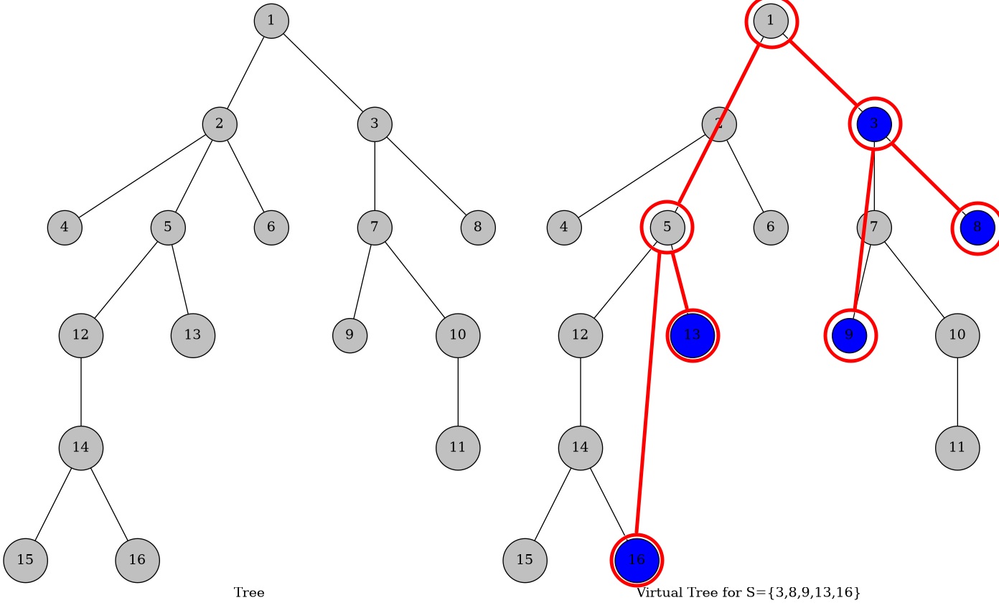

虚树入门
虚树
虚树是指对一棵树，取其点集的子集作为关键点集，将关键点以及他们两两之间的 LCA 构成的点集拿出来建立一棵树，这棵树称为的关于的虚树。
虚树的意义是它只包含了关键点以及 LCA，但也维护了原树的结构特征，方便我们对信息的处理。

虚树的构建
我们对原树先做一次 DFS，求出每个点的 DFS 序。然后把关键点按照 DFS 序排序。考虑增量构造。我们用栈维护当前虚树的右链。添加一个结点相当于删掉末端的一些点，再把这个点加入到右链上。
在弹栈的时候就把这条边加到虚树上。最后把栈里所有的点依次连边加到虚树上即可。
int s[N],tp;
void build_virtual_tree(vector<int> & V){
int root=V[0];
for(int u:V)root=lca(root,u);
s[tp=1]=root;
for(int u:V){
int y=lca(s[tp],u);
while(tp>1&&dep[y]<dep[s[tp-1]])
Vadd(s[tp-1],s[tp],W(s[tp-1],s[tp])), --tp;
if(y==s[tp]);
else {
assert(tp>1);
if(y==s[tp-1]) Vadd(y,s[tp],W(y,s[tp])), --tp;
else Vadd(y,s[tp],W(y,s[tp])), s[tp]=y;
}
s[++tp]=u;
}
while(tp>1) Vadd(s[tp-1],s[tp],W(s[tp-1],s[tp])), --tp;
}
// s 和 tp 是栈
// V 表示关键点集，并且已经排好序。
// Vadd 表示在虚树上加上这条边，W 表示边权
// root 在特殊情况也可能是 T 的根考虑到排序的复杂度，虚树的构建复杂度是的。
小性质：虚树的规模是的。
「例 1」 SDOI2011 消耗战
给出一棵边带权的树，多次询问，每次给出一个点集，，要求删掉权值和最小的边使得 1 与中任意一个点都不连通。求这个最小权值和。
。
显然的虚树题。每次询问，对建虚树，边权置为两点间边权最小值。那么我们就只需要在这个虚树做原问题即可。由于虚树的规模是，考虑到排序的复杂度，则总复杂度为。
「例 2」 ZR982 黄队
有一棵个节点的树，其中所有的树边到标号。定义为经过由标号不超过的边构成的路径到达的点集。
现在有个询问，每个询问给你一组点，求这样的元组个数，满足且这些点集两两不交。
由于答案很大，请输出对取模的值。
.
首先思考和不相交的条件是什么。设表示到的边的编号最大值，那么充要条件就是且。
题目中要求的是两两不交，那么意味着。
考虑离线并查集。把边权从小到大排序。那么考虑当前这条边，则的连通块和的连通块边权都小于，因此如果中只有一个关键点，中有至少一个关键点，那么的关键点对应的的限制就是。对称情况是一样的。其他情况，是不能确定限制的值的。
最后把限制都乘起来就是答案。
这个过程显然是可以在虚树上做的。
总复杂度。
修订记录
- 2020年1月27日 创建文章